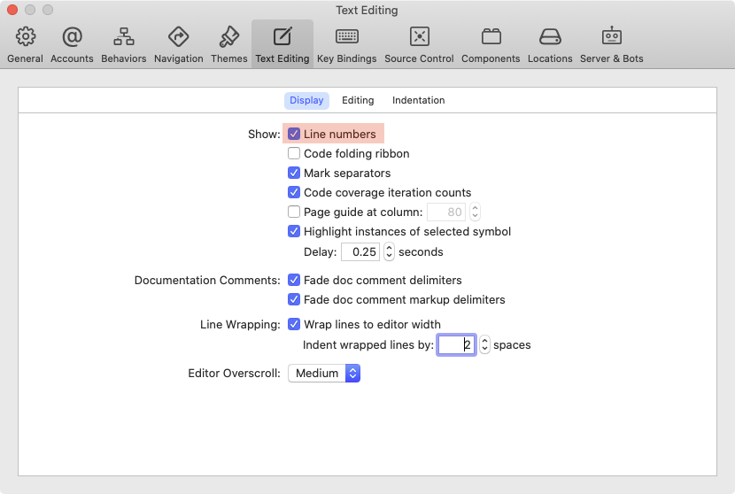
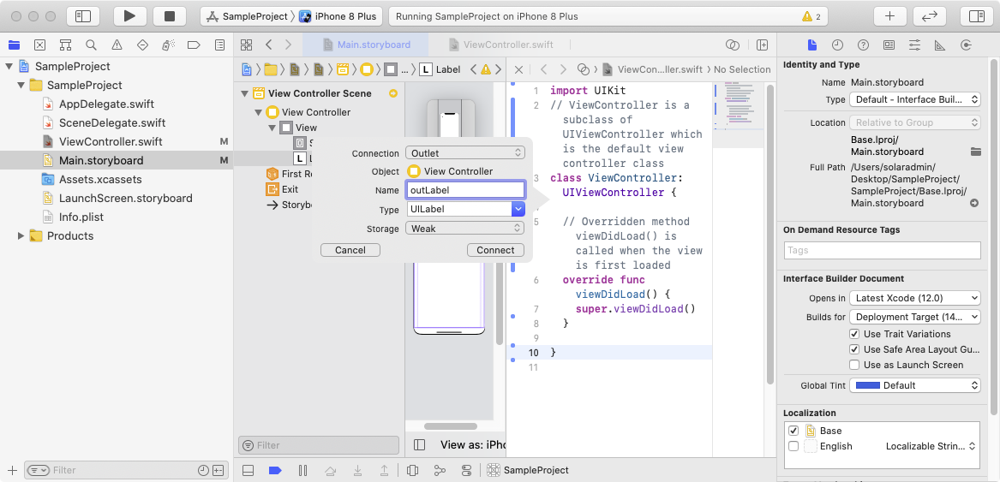

What you'll learn
- Add user interface objects to the user interface file
- Use code and IDE to configure user interface objects
- Create and use properties to access user interface objects
- Create and use methods to respond to user actions
What you'll need
- Mac running macOS Catalina
- Xcode 12
- Start Xcode, select
Create a new Xcode project
- Select
iOSandApp.
- Enter the
Product Name. Follow the rest of the settings shown in the screenshot but update with your student number for theOrganization Identifier.
- Click on Main.storyboard, click on
View as:and choose iPhone 8 Plus.
- Click on the SampleProject scheme and set the simulator as iPhone 8 Plus.
- Press the Run button (keyboard shortcut is CMD-R) and the simulator will launch.
https://developer.apple.com/documentation/xcode/creating_an_xcode_project_for_an_app
The navigator bar at the top of the navigator area has icons for the different navigators, while the inspector bar at the top of the inspector area has icons for the different inspectors. Mouse over the icons to discover the various navigators and inspectors.
Navigator Bar :
The Project navigator allows you to navigate the files in the project.
Inspector Bar (for ViewController.swift) :
Inspector Bar (for Main.storyboard) :
The available inspectors depends on the file being edited and which item is currently highlighted in the editor window. The inspectors which will be used for this lesson include the Attributes inspector and the Connections inspector.
https://help.apple.com/xcode/mac/current/#/dev31645f17f
Interface Builder (IB)
When Main.storyboard is selected, the editor shows the Interface Builder (IB) which allows you to build the user interface for your application in the Canvas.
Document Outline
The Document Outline / outline view provides an alternative view of the canvas. To hide or show the outline view, use the Document Outline button to show or hide the outline view.
Object Library
Click the + button in the toolbar to open the Objects Library, then drag the desired objects from the library to the canvas.
Layout rectangles and Bounds rectangles
When working with Main.storyboard, it is very useful to show the Layout Rectangles and Bounds Rectangles. This can be configured via the Editor menu item in the menu bar.

Setting the position and size of an object
In the canvas, drag the objects to change their position, and use the sizing handles to change the size of the objects.
Setting the attributes of an object
In the canvas, select the object, and use the Attributes inspector to set the attributes for that object.
Source editor
When a swift file is selected from the Project navigator, that file can be edited using the source editor
ViewController.swift
- ViewController is a subclass of
UIViewControllerwhich is the default view controller class - Overridden method
viewDidLoad()is called when the view is first loaded
import UIKit
// ViewController is a subclass of UIViewController which is the default view controller class
class ViewController: UIViewController {
// Overridden method viewDidLoad() is called when the view is first loaded
override func viewDidLoad() {
super.viewDidLoad()
}
}Showing line numbers
Click the Xcode menu item and select Preferences...
Under Text Editing, check Line numbers

Code formatting / indentation
In the swift file, select all code (CMD-A) and indent the code (CTRL-I)
https://developer.apple.com/documentation/uikit/uilabel
text : String?- The current text that is displayed by the label.
From the Project navigator, select Main.storyboard.
Click on the Adjust Editor Options button and select Assistant.
The Assistant Editor shows Main.storyboard and ViewController.swift side-by-side to allow creation of IBOutlet properties and IBAction methods.
https://help.apple.com/xcode/mac/current/#/devc06f7ee11
- Select Main.storyboard
- Show the Assistant Editor
- Right-click drag from the user interface object in Main.storyboard (via the Document Outline) to ViewController.swift
- In the Connection dialog, provide a name for the IBOutlet property and click Connect

import UIKit
class ViewController: UIViewController {
// Put IBOutlet properties at the start of the class
@IBOutlet weak var outLabel: UILabel!
override func viewDidLoad() {
super.viewDidLoad()
}
}Watch the video IBOutlet.mov.
- Create a project called Activity02
- Select Main.storyboard
- Show the Object Library
- Add a UILabel to Main.storyboard from the Object Library
- Show the Assistant Editor
- Right-click drag from the user interface object in Main.storyboard (via the Document Outline) to ViewController.swift
- In the Connection dialog, provide a name for the IBOutlet property and click Connect
- Add a line of code to
viewDidLoad()to set the text on the UILabel object.
import UIKit
// ViewController is a subclass of UIViewController which is the default view controller class
class ViewController: UIViewController {
@IBOutlet weak var outLabel: UILabel!
// Overridden method viewDidLoad() is called when the view is first loaded
override func viewDidLoad() {
super.viewDidLoad()
// set the text for the label
outLabel.text = "Hello"
}
}- Run the project. Observe the text in the UILabel object.
https://developer.apple.com/documentation/uikit/uislider
Responding to User Interaction
- Sliders use the Target-Action design pattern to notify your app when the user moves the slider. To be notified when the slider's value changes, register your action method with the valueChanged event. At runtime, the slider calls your method in response to the user changing the slider's value.
value: Float- slider's current valueminimumValue: Float- minimum value of the slidermaximumValue: Float- maximum value of the slider
https://help.apple.com/xcode/mac/current/#/dev9662c7670
- Select Main.storyboard
- Show the Assistant Editor
- Right-click drag from the user interface object in Main.storyboard to ViewController.swift
- In the Connection dialog, select the type, the event to respond to and provide a name for the IBAction method and click Connect
import UIKit
class ViewController: UIViewController {
override func viewDidLoad() {
super.viewDidLoad()
}
// Put IBAction methods at the end of the class
@IBAction func actSlider(_ sender: UISlider) {
}
}Connections between user interface objects in Main.storyboard and IBOutlet properties in ViewController.swift appear under Referencing Outlets
Connections between user interface objects in Main.storyboard and IBAction methods in ViewController.swift appear under Sent Events
Watch the video IBAction.mov.
- Continue from the project called Activity02
- Select Main.storyboard
- Show the object library
- Add a UISlider to Main.storyboard from the object library
- Show the assistant editor
- Right-click drag from user interface object in Main.storyboard to ViewController.swift
- In the Connection dialog, set the type to UISlider, provide a name for the IBAction method and click Connect
- In the IBAction method, set the text property of the UILabel with the value property of the UISilder.
import UIKit
// ViewController is a subclass of UIViewController which is the default view controller class
class ViewController: UIViewController {
// Put IBOutlet properties at the start of the class
@IBOutlet weak var outLabel: UILabel!
// Overridden method viewDidLoad() is called when the view is first loaded
override func viewDidLoad() {
super.viewDidLoad()
// set the text for the label
outLabel.text = "Hello"
}
// Put IBAction methods at the end of the class
@IBAction func actSlider(_ sender: UISlider) {
// set the text for the label with the value of the slider
outLabel.text = "\(sender.value)"
}
}- Run the project. Move the slider and observe the text in the UILabel object.
- Continue from the project called Activity02
- Right click on the project folder in the Project Navigator and select New File...
- In the template selection screen, choose
iOS,Swift File
- Set the filename to be the same as the name of the class to be created. The file should be saved in the project folder (which is the default). Do not change the location.
- Add the class definition inside the file.
- UITextField and UITextFieldDelegate